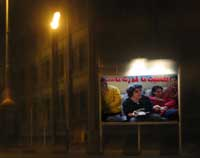

|
شرم بر پيشانيام مينشيند كه چرا شعار ”براي هر ايراني يك سانتريفوژ“ را مطرح نكرديم و از حق داشتن تكنولوژي هسته اي كه در سنت و فرهنگ ما ريشههاي عميق دارد و باعث ميشود كه كشور از خطر جنگ و تهاجم رهايي يابد دفاع نميكرديم اما تحت القائات سازمان سيا از حق حضانت كه اصلا به جامعهي ما ربطي ندارد سخن ميرانديم.
4ـ ما به جاي آنكه كارگاه آموزشي برپا كنيم تا راهكارهايي براي حمايت از مثلا زن همسايه كه در حال كتك خوردن است بيابيم (و در واقع به اين بهانه در زندگي خصوصي مردم دخالت كنيم و حكومتمان را نيز دچار تهديد كنيم) بايد ميرفتيم خطكش ميگرفتيم تا ببينيم زن همسايه كه دماغش شكسته و زير چشماش كبود شده، چند سانت روسرياش عقب رفته تا به او تذكرات لازم را در مورد حفظ حجاباش بدهيم. چون همين بيبند و باريها باعث عصبانيت مردان ميشود. بله، ما آدرس غلط ميداديم و ميگفتيم اين قدرت زياد مردان در قانون و عرف جامعه است كه باعث ايجاد اين خشونتها ميشود در صورتيكه همين عقب و جلو رفتن روسري زنان است كه حيات و ممات جامعه به آن وصل است. اجرای زنده در پارک با حضور جنيس چاپلين و جيمی هندريکس 5ـ ما به جاي اينكه ادعا كنيم زنان هم آدم هستند و بايد بتوانند آزادانه در ورزشگاهها به تماشاي مسابقات ورزشي بروند بايد از فرهنگ ”غنيسازي“ خودمان حركت ميكرديم و ميگفتيم زنان آدم نيستند بلكه فرشته هستند و فرشته هم جايش در آشپزخانه است و خداوند آشپزخانه را اصلا براي فرشتههاي مقرب خودش ساخته تا به جاي دود گازوئيل، رايحهي روغن سوخته ماهيتابه نوش جان كنند. به راستي اين سازمان سيا چرا ما را پايگاه خود كرده بود و ما هم از همهجا بيخبر، فكسهايي را كه هر روز سازمان سيا ميفرستاد مو به مو عمل ميكرديم و كمپين خشونت عليه زنان ميگذاشتيم و بنيان نهاد خانواده را متزلزل ميكرديم!!! درصورتيكه اگر همه زنان در آشپزخانه ميماندند هر روز در كنار غذا پختن ميتوانستند بنيان خانواده را هم تحكيم كنند (اميدوارم خوانندگان قطرات اشكي را كه شر و شر توسط نگارنده بر اين سطور جاري شده احساس كنند).
6 ـ ما به جاي اينكه حساس باشيم كه وزير امور خارجه كشورمان در ضيافت شام در كجا مينشيند و آيا كنار او همتاي آمريكايياش هم نشسته يا نه، به فكر بچههاي درپيتي بوديم كه در خانه مورد خشونت خانگي قرار ميگيرند يا اعدام ميشوند. درصورتي كه هر عقل سليم و هر انسان آزادهاي بايد دلش به درد بيايد كه چرا وزير امر خارجه كشورش نجس شده و كنار يك آمريكايي غذا صرف كرده نه اينكه به دنبال چند بچه بدبخت و بيكس و كار بيافتد كه چه بر سرشان ميآيد.
7 ـ از همه دلخراشتر آنكه در اثر تلقينات ”شيطان بزرگ“ ما به قتلهاي ناموسي هم روي آورديم و براي آن زبانم لال ”اعتراض“ هم كرديم. درصورتي كه واقعا نميفهميديم وظيفه ما در تشكلهاي واقعي زنان آن است كه دختران خطاكاري را كه باعث شرمساري پدر و شوهر و برادران خود شدهاند با دستان خودمان به قتل برسانيم تا مردان غيرتمند اين مملكت به زحمت نيافتند و گناه قتلهاي ناموسي نيز از اين غيوران وطن ساقط شود. اينجانب براي آنكه التزام عملي خود را به اين ندامتنامه نشان دهم شخصا وظيفه ملي كشتن ژيلاي 13 ساله را در سنندج برعهده خواهم گرفت تا دست پاك پدر و برادرانش يا احيانا مردان ديگر خانواده در آينده به خون ناپاك او آلوده نشود و پايههاي خانواده و سنتها هم به اين طريق هرچه سفتتر شود.
8 ـ ما به جاي آنكه از سنت و فرهنگ اصيل خودمان تبعيت كنيم و مثلا از همين قانون تعدد زوجات براي ايجاد همبستگي زنانه استفاده كنيم، دچار تهاجم فرهنگي شده بوديم و عليه تعدد زوجات وراجي كنيم. در صورتي كه نميفهميديم همين تعدد زوجات چه نعمت بزرگي براي ايجاد تشكلهاي واقعي زنانه است و اگر شوهرانمان ميرفتند و چند زن ميگرفتند ميتوانستيم با هووهايمان جمع شويم و دم خانه سبزي پاك كنيم و همبستگيمان را اعلام كنيم و احتياج به اين چيزهاي غربي مثل تشكل و ان. جي. او نداشتيم.
9ـ ما نميدانستيم بهجاي اعتراض نسبت به سانسور، اتفاقا بايد از افزايش قيمت كاغذ، اذيت و تحقير ناشران و عدم صدور مجوز براي كتابها حمايت كنيم تا ديگر كتابي چاپ نشود و وقتي كتابي چاپ نشود، مسئله سانسور هم خودبهخود منتفي ميشود و برادران زحمتكش مميزي نيز به سر خانه و زندگي خود باز ميگردند. .... بههرحال اين چهارتا و نصفي تشكل مستقل زنانه كارهاي خيلي بدي كردهاند كه اين خلاصهاي از آنها بود كه عرض كردم. اما مطمئنم صرفا با اعتراف خشك و خالي نميشود از زير بار همهي اين گناهان كبيره شانه خالي كرد اما شايد نوازشهاي مهربانانه در اتاقهاي كوچك و جمع وجور (2در 3متر) در تنهايي بتواند من و امثال مرا در اين جهادي كه با نفس عماره و خيانتبارم آغاز كردهام كمك كند تا هرچه بيشتر به زواياي گناهان خود پي ببرم، به اميد آن روز.چرا باید به جنبش رفراندم پیوست؟
|
 لطفن در سایت گم شوید
|